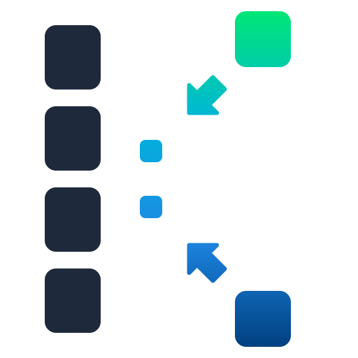

Input file
Result ↓or drop it here · Up to 64 MiB
Result
Run compression to inspect the result
- Input size
- —
- Output size
- —
- Ratio
- —
- Time
- —

Experimental Kotlin compression library
Loading WASM…
or drop it here · Up to 64 MiB
Run compression to inspect the result
Loading benchmark results…
RAW DEFLATE at level 6, measured on Linux. Times include allocation and backend bridge costs. These results describe the recorded commit, which may differ from this demo.
Compare libraries within the same platform. Native and Wasm each represent one runner session; repeat measurements before drawing release-wide conclusions.
Download results and raw samples